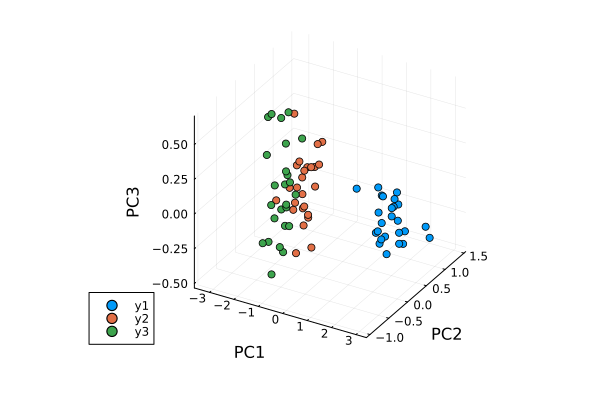

Principal Component Analysis
Principal Component Analysis (PCA) derives an orthogonal projection to convert a given set of observations to linearly uncorrelated variables, called principal components.
Example
Performing PCA on Iris data set:
using MultivariateStats, RDatasets, Plots
# load iris dataset
iris = dataset("datasets", "iris")
# split half to training set
Xtr = Matrix(iris[1:2:end,1:4])'
Xtr_labels = Vector(iris[1:2:end,5])
# split other half to testing set
Xte = Matrix(iris[2:2:end,1:4])'
Xte_labels = Vector(iris[2:2:end,5])Suppose Xtr and Xte are training and testing data matrix, with each observation in a column. We train a PCA model, allowing up to 3 dimensions:
M = fit(PCA, Xtr; maxoutdim=3)PCA(indim = 4, outdim = 3, principalratio = 0.9957325846529409)
Pattern matrix (unstandardized loadings):
────────────────────────────────────
PC1 PC2 PC3
────────────────────────────────────
1 0.70954 0.344711 -0.160106
2 -0.227592 0.29865 0.215417
3 1.77976 -0.0797511 0.0197705
4 0.764206 -0.0453779 0.166764
────────────────────────────────────
Importance of components:
─────────────────────────────────────────────────────────
PC1 PC2 PC3
─────────────────────────────────────────────────────────
SS Loadings (Eigenvalues) 4.3068 0.216437 0.100239
Variance explained 0.927532 0.0466128 0.021588
Cumulative variance 0.927532 0.974145 0.995733
Proportion explained 0.931507 0.0468125 0.0216805
Cumulative proportion 0.931507 0.978319 1.0
─────────────────────────────────────────────────────────Then, apply PCA model to the testing set
Yte = predict(M, Xte)3×75 Matrix{Float64}:
2.72714 2.75491 2.32396 … -1.92047 -1.74161 -1.37706
-0.230916 -0.406149 0.646374 0.246554 0.127625 -0.280295
0.253119 0.0271266 -0.230469 -0.180044 -0.123165 -0.314992And, reconstruct testing observations (approximately) to the original space
Xr = reconstruct(M, Yte)4×75 Matrix{Float64}:
4.86449 4.61087 5.40782 5.00775 … 6.79346 6.58825 6.46774 5.94384
3.04262 3.08695 3.89061 3.39069 3.20785 3.13416 3.03873 2.94737
1.46099 1.48132 1.68656 1.48668 5.91124 5.39197 5.25542 5.02469
0.10362 0.229519 0.421233 0.221041 2.28224 1.99665 1.91243 1.91901Now, we group results by testing set labels for color coding and visualize first 3 principal components in 3D plot
setosa = Yte[:,Xte_labels.=="setosa"]
versicolor = Yte[:,Xte_labels.=="versicolor"]
virginica = Yte[:,Xte_labels.=="virginica"]
p = scatter(setosa[1,:],setosa[2,:],setosa[3,:],marker=:circle,linewidth=0)
scatter!(versicolor[1,:],versicolor[2,:],versicolor[3,:],marker=:circle,linewidth=0)
scatter!(virginica[1,:],virginica[2,:],virginica[3,:],marker=:circle,linewidth=0)
plot!(p,xlabel="PC1",ylabel="PC2",zlabel="PC3")
Linear Principal Component Analysis
This package uses the PCA type to define a linear PCA model:
MultivariateStats.PCA — Type
Linear Principal Component Analysis
This type comes with several methods where $M$ be an instance of PCA, $d$ be the dimension of observations, and $p$ be the output dimension (i.e the dimension of the principal subspace).
StatsAPI.fit — Method
fit(PCA, X; ...)Perform PCA over the data given in a matrix X. Each column of X is an observation.
Keyword arguments
method: The choice of methods::auto: use:covwhend < nor:svdotherwise (default).:cov: based on covariance matrix decomposition.:svd: based on SVD of the input data.
maxoutdim: The output dimension, i.e. dimension of the transformed space (min(d, nc-1))pratio: The ratio of variances preserved in the principal subspace (0.99)mean: The mean vector, which can be either of0: the input data has already been centralizednothing: this function will compute the mean (default)- a pre-computed mean vector
Notes:
The output dimension
pdepends on bothmaxoutdimandpratio, as follows. Suppose the firstkprincipal components preserve at leastpratioof the total variance, while the firstk-1preserves less thanpratio, then the actual output dimension will be $\min(k, maxoutdim)$.This function calls
pcacovorpcasvdinternally, depending on the choice of method.
StatsAPI.predict — Method
predict(M::PCA, x::AbstractVecOrMat{<:Real})Given a PCA model M, transform observations x into principal components space, as
\[\mathbf{y} = \mathbf{P}^T (\mathbf{x} - \boldsymbol{\mu})\]
Here, x can be either a vector of length d or a matrix where each column is an observation, and \mathbf{P} is the projection matrix.
MultivariateStats.reconstruct — Method
reconstruct(M::PCA, y::AbstractVecOrMat{<:Real})Given a PCA model M, returns a (approximately) reconstructed observations from principal components space, as
\[\tilde{\mathbf{x}} = \mathbf{P} \mathbf{y} + \boldsymbol{\mu}\]
Here, y can be either a vector of length p or a matrix where each column gives the principal components for an observation, and $\mathbf{P}$ is the projection matrix.
Statistics.mean — Method
mean(M::PCA)Returns the mean vector (of length d).
MultivariateStats.projection — Method
projection(M::PCA)Returns the projection matrix (of size (d, p)). Each column of the projection matrix corresponds to a principal component. The principal components are arranged in descending order of the corresponding variances.
Statistics.var — Method
var(M::PCA)Returns the total observation variance, which is equal to tprincipalvar(M) + tresidualvar(M).
MultivariateStats.principalvars — Method
principalvars(M::PCA)Returns the variances of principal components.
MultivariateStats.tprincipalvar — Method
tprincipalvar(M::PCA)Returns the total variance of principal components, which is equal to sum(principalvars(M)).
MultivariateStats.tresidualvar — Method
tresidualvar(M::PCA)Returns the total residual variance.
StatsAPI.r2 — Method
r2(M::PCA)
principalratio(M::PCA)Returns the ratio of variance preserved in the principal subspace, which is equal to tprincipalvar(M) / var(M).
MultivariateStats.loadings — Method
loadings(M::PCA)Returns model loadings, i.e. the weights for each original variable when calculating the principal component.
LinearAlgebra.eigvals — Method
eigvals(M::PCA)Get the eigenvalues of the PCA model M.
LinearAlgebra.eigvecs — Method
eigvecs(M::PCA)Get the eigenvectors of the PCA model M.
Auxiliary functions:
MultivariateStats.pcacov — Function
pcacov(C, mean; ...)Compute and return a PCA model based on eigenvalue decomposition of a given covariance matrix C.
Parameters:
C: The covariance matrix of the samples.mean: The mean vector of original samples, which can be a vector of lengthd, or an empty vectorFloat64[]indicating a zero mean.
Note: This function accepts two keyword arguments: maxoutdim and pratio.
MultivariateStats.pcasvd — Function
pcasvd(Z, mean, tw; ...)Compute and return a PCA model based on singular value decomposition of a centralized sample matrix Z.
Parameters:
Z: a matrix of centralized samples.mean: The mean vector of the original samples, which can be a vector of lengthd, or an empty vectorFloat64[]indicating a zero mean.n: a number of samples.
Note: This function accepts two keyword arguments: maxoutdim and pratio.
Kernel Principal Component Analysis
Kernel Principal Component Analysis (kernel PCA) is an extension of principal component analysis (PCA) using techniques of kernel methods. Using a kernel, the originally linear operations of PCA are performed in a reproducing kernel Hilbert space.
This package defines a KernelPCA type to represent a kernel PCA model.
MultivariateStats.KernelPCA — Type
This type contains kernel PCA model parameters.
The package provides a set of methods to access the properties of the kernel PCA model. Let $M$ be an instance of KernelPCA, $d$ be the dimension of observations, and $p$ be the output dimension (i.e the dimension of the principal subspace).
StatsAPI.fit — Method
fit(KernelPCA, X; ...)Perform kernel PCA over the data given in a matrix X. Each column of X is an observation.
This method returns an instance of KernelPCA.
Keyword arguments:
Let (d, n) = size(X) be respectively the input dimension and the number of observations:
kernel: The kernel function. This functions accepts two vector argumentsxandy,
and returns a scalar value (default: (x,y)->x'y). If set to nothing, the matrix X is the pre-computed symmetric kernel (Gram) matrix.
solver: The choice of solver::eig: usesLinearAlgebra.eigen(default):eigs: usesArpack.eigs(always used for sparse data)
maxoutdim: Maximum output dimension (defaultmin(d, n))inverse: Whether to perform calculation for inverse transform for non-precomputed kernels (defaultfalse)β: Hyperparameter of the ridge regression that learns the inverse transform (default1wheninverseistrue).tol: Convergence tolerance foreigssolver (default0.0)maxiter: Maximum number of iterations foreigssolver (default300)
StatsAPI.predict — Method
predict(M::KernelPCA)Transform the data fitted to the model M to a kernel space of the model.
StatsAPI.predict — Method
predict(M::KernelPCA, x)Transform out-of-sample transformation of x into a kernel space of the model M.
Here, x can be either a vector of length d or a matrix where each column is an observation.
MultivariateStats.reconstruct — Method
reconstruct(M::KernelPCA, y)Approximately reconstruct observations, given in y, to the original space using the kernel PCA model M.
Here, y can be either a vector of length p or a matrix where each column gives the principal components for an observation.
MultivariateStats.projection — Method
projection(M::KernelPCA)Return the projection matrix (of size $n \times p$). Each column of the projection matrix corresponds to an eigenvector, and $n$ is a number of observations.
The principal components are arranged in descending order of the corresponding eigenvalues.
LinearAlgebra.eigvals — Method
eigvals(M::KernelPCA)Return eigenvalues of the kernel matrix of the model M.
LinearAlgebra.eigvecs — Method
eigvecs(M::KernelPCA)Return eigenvectors of the kernel matrix of the model M.
Kernels
List of the commonly used kernels:
| function | description |
|---|---|
(x,y)->x'y | Linear |
(x,y)->(x'y+c)^d | Polynomial |
(x,y)->exp(-γ*norm(x-y)^2.0) | Radial basis function (RBF) |
This package has a separate interface for adjusting kernel matrices.
MultivariateStats.KernelCenter — Type
Center a kernel matrix
StatsAPI.fit — Method
Fit KernelCenter object
MultivariateStats.transform! — Method
Center kernel matrix.
Probabilistic Principal Component Analysis
Probabilistic Principal Component Analysis (PPCA) represents a constrained form of the Gaussian distribution in which the number of free parameters can be restricted while still allowing the model to capture the dominant correlations in a data set. It is expressed as the maximum likelihood solution of a probabilistic latent variable model[1].
This package defines a PPCA type to represent a probabilistic PCA model, and provides a set of methods to access the properties.
MultivariateStats.PPCA — Type
This type contains probabilistic PCA model parameters.
Let $M$ be an instance of PPCA, $d$ be the dimension of observations, and $p$ be the output dimension (i.e the dimension of the principal subspace).
StatsAPI.fit — Function
fit(Whitening, X::AbstractMatrix{T}; kwargs...)Estimate a whitening transform from the data given in X.
This function returns an instance of Whitening
Keyword Arguments:
regcoef: The regularization coefficient. The covariance will be regularized as follows whenregcoefis positiveC + (eigmax(C) * regcoef) * eye(d). Default values iszero(T).dims: if1the transformation calculated from the row samples. fit standardization parameters in column-wise fashion; if2the transformation calculated from the column samples. The default isnothing, which is equivalent todims=2with a deprecation warning.mean: The mean vector, which can be either of:0: the input data has already been centralizednothing: this function will compute the mean (default)- a pre-computed mean vector
Note: This function internally relies on cov_whitening to derive the transformation W.
fit(PCA, X; ...)Perform PCA over the data given in a matrix X. Each column of X is an observation.
Keyword arguments
method: The choice of methods::auto: use:covwhend < nor:svdotherwise (default).:cov: based on covariance matrix decomposition.:svd: based on SVD of the input data.
maxoutdim: The output dimension, i.e. dimension of the transformed space (min(d, nc-1))pratio: The ratio of variances preserved in the principal subspace (0.99)mean: The mean vector, which can be either of0: the input data has already been centralizednothing: this function will compute the mean (default)- a pre-computed mean vector
Notes:
The output dimension
pdepends on bothmaxoutdimandpratio, as follows. Suppose the firstkprincipal components preserve at leastpratioof the total variance, while the firstk-1preserves less thanpratio, then the actual output dimension will be $\min(k, maxoutdim)$.This function calls
pcacovorpcasvdinternally, depending on the choice of method.
fit(PPCA, X; ...)Perform probabilistic PCA over the data given in a matrix X. Each column of X is an observation. This method returns an instance of PPCA.
Keyword arguments:
Let (d, n) = size(X) be respectively the input dimension and the number of observations:
method: The choice of methods::ml: use maximum likelihood version of probabilistic PCA (default):em: use EM version of probabilistic PCA:bayes: use Bayesian PCA
maxoutdim: Maximum output dimension (defaultd-1)mean: The mean vector, which can be either of:0: the input data has already been centralizednothing: this function will compute the mean (default)- a pre-computed mean vector
tol: Convergence tolerance (default1.0e-6)maxiter: Maximum number of iterations (default1000)
Notes: This function calls ppcaml, ppcaem or bayespca internally, depending on the choice of method.
Fit KernelCenter object
fit(KernelPCA, X; ...)Perform kernel PCA over the data given in a matrix X. Each column of X is an observation.
This method returns an instance of KernelPCA.
Keyword arguments:
Let (d, n) = size(X) be respectively the input dimension and the number of observations:
kernel: The kernel function. This functions accepts two vector argumentsxandy,
and returns a scalar value (default: (x,y)->x'y). If set to nothing, the matrix X is the pre-computed symmetric kernel (Gram) matrix.
solver: The choice of solver::eig: usesLinearAlgebra.eigen(default):eigs: usesArpack.eigs(always used for sparse data)
maxoutdim: Maximum output dimension (defaultmin(d, n))inverse: Whether to perform calculation for inverse transform for non-precomputed kernels (defaultfalse)β: Hyperparameter of the ridge regression that learns the inverse transform (default1wheninverseistrue).tol: Convergence tolerance foreigssolver (default0.0)maxiter: Maximum number of iterations foreigssolver (default300)
fit(CCA, X, Y; ...)Perform CCA over the data given in matrices X and Y. Each column of X and Y is an observation.
X and Y should have the same number of columns (denoted by n below).
This method returns an instance of CCA.
Keyword arguments:
method: The choice of methods::cov: based on covariance matrices:svd: based on SVD of the input data (default)
outdim: The output dimension, i.e dimension of the common space (default:min(dx, dy, n))mean: The mean vector, which can be either of:0: the input data has already been centralizednothing: this function will compute the mean (default)- a pre-computed mean vector
Notes: This function calls ccacov or ccasvd internally, depending on the choice of method.
fit(MDS, X; kwargs...)Compute an embedding of X points by classical multidimensional scaling (MDS). There are two calling options, specified via the required keyword argument distances:
mds = fit(MDS, X; distances=false, maxoutdim=size(X,1)-1)where X is the data matrix. Distances between pairs of columns of X are computed using the Euclidean norm. This is equivalent to performing PCA on X.
mds = fit(MDS, D; distances=true, maxoutdim=size(D,1)-1)where D is a symmetric matrix D of distances between points.
fit(MetricMDS, X; kwargs...)Compute an embedding of X points by (non)metric multidimensional scaling (MDS).
Keyword arguments:
Let (d, n) = size(X) be respectively the input dimension and the number of observations:
distances: The choice of input (required):false: useXto calculate dissimilarity matrix using Euclidean distancetrue: useXinput as precomputed dissimilarity symmetric matrix (distances)
maxoutdim: Maximum output dimension (defaultd-1)metric: a function for calculation of disparity valuesnothing: use dissimilarity values as the disparities to perform the metric MDS (default)isotonic: converts dissimilarity values to ordinal disparities to perform non-metric MDS- any two parameter disparity transformation function, where the first parameter is a vector of proximities (i.e. dissimilarities) and the second parameter is a vector of distances, e.g.
(p,d)->b*pfor somebis a transformation function for ratio MDS.
tol: Convergence tolerance (default1.0e-3)maxiter: Maximum number of iterations (default300)initial: an initial reduced space point configurationnothing: then an initial configuration is randomly generated (default)- pre-defined matrix
weights: a weight matrixnothing: then weights are set to one, $w_{ij} = 1$ (default)- pre-defined matrix
Note: if the algorithm is unable to converge then ConvergenceException is thrown.
fit(LinearDiscriminant, Xp, Xn; covestimator = SimpleCovariance())Performs LDA given both positive and negative samples. The function accepts following parameters:
Parameters
Xp: The sample matrix of the positive class.Xn: The sample matrix of the negative class.
Keyword arguments:
covestimator: Custom covariance estimator for between-class covariance. The covariance matrix will be calculated ascov(covestimator_between, #=data=#; dims=2, mean=zeros(#=...=#). Custom covariance estimators, available in other packages, may result in more robust discriminants for data with more features than observations.
fit(MulticlassLDA, X, y; ...)Perform multi-class LDA over a given data set X with corresponding labels y with nc number of classes.
This function returns the resultant multi-class LDA model as an instance of MulticlassLDA.
Parameters
X: the matrix of input samples, of size(d, n). Each column inXis an observation.y: the vector of class labels, of lengthn.
Keyword arguments
method: The choice of methods::gevd: based on generalized eigenvalue decomposition (default).:whiten: first derive a whitening transform fromSwand then solve the problem based on eigenvalue
Sb.outdim: The output dimension, i.e. dimension of the transformed spacemin(d, nc-1)regcoef: The regularization coefficient (default:1.0e-6). A positive valueregcoef * eigmax(Sw)is added to the diagonal ofSwto improve numerical stability.covestimator_between: Custom covariance estimator for between-class covariance (default:SimpleCovariance()). The covariance matrix will be calculated ascov(covestimator_between, #=data=#; dims=2, mean=zeros(#=...=#)). Custom covariance estimators, available in other packages, may result in more robust discriminants for data with more features than observations.covestimator_within: Custom covariance estimator for within-class covariance (default:SimpleCovariance()). The covariance matrix will be calculated ascov(covestimator_within, #=data=#; dims=2, mean=zeros(nc)). Custom covariance estimators, available in other packages, may result in more robust discriminants for data with more features than observations.
Notes:
The resultant projection matrix $P$ satisfies:
\[\mathbf{P}^T (\mathbf{S}_w + \kappa \mathbf{I}) \mathbf{P} = \mathbf{I}\]
Here, $\kappa$ equals regcoef * eigmax(Sw). The columns of $\mathbf{P}$ are arranged in descending order of the corresponding generalized eigenvalues.
Note that MulticlassLDA does not currently support the normalized version using $\mathbf{S}_w^*$ and $\mathbf{S}_b^*$ (see SubspaceLDA).
fit(SubspaceLDA, X, y; normalize=true)Fit an subspace projection of LDA model over a given data set X with corresponding labels y using the equivalent of $\mathbf{S}_w^*$ and $\mathbf{S}_b^*$`.
Note: Subspace LDA also supports the normalized version of LDA via the normalize keyword.
fit(ICA, X, k; ...)Perform ICA over the data set given in X.
Parameters: -X: The data matrix, of size $(m, n)$. Each row corresponds to a mixed signal, while each column corresponds to an observation (e.g all signal value at a particular time step). -k: The number of independent components to recover.
Keyword Arguments:
alg: The choice of algorithm (default:fastica)fun: The approx neg-entropy functor (defaultTanh)do_whiten: Whether to perform pre-whitening (defaulttrue)maxiter: Maximum number of iterations (default100)tol: Tolerable change of $W$ at convergence (default1.0e-6)mean: The mean vector, which can be either of:0: the input data has already been centralizednothing: this function will compute the mean (default)- a pre-computed mean vector
winit: Initial guess of $W$, which should be either of:- empty matrix: the function will perform random initialization (default)
- a matrix of size $(k, k)$ (when
do_whiten) - a matrix of size $(m, k)$ (when
!do_whiten)
Returns the resultant ICA model, an instance of type ICA.
Note: If do_whiten is true, the return W satisfies $\mathbf{W}^T \mathbf{C} \mathbf{W} = \mathbf{I}$, otherwise $W$ is orthonormal, i.e $\mathbf{W}^T \mathbf{W} = \mathbf{I}$.
fit(FactorAnalysis, X; ...)Perform factor analysis over the data given in a matrix X. Each column of X is an observation. This method returns an instance of FactorAnalysis.
Keyword arguments:
Let (d, n) = size(X) be respectively the input dimension and the number of observations:
method: The choice of methods::em: use EM version of factor analysis:cm: use CM version of factor analysis (default)
maxoutdim: Maximum output dimension (defaultd-1)mean: The mean vector, which can be either of:0: the input data has already been centralizednothing: this function will compute the mean (default)- a pre-computed mean vector
tol: Convergence tolerance (default1.0e-6)maxiter: Maximum number of iterations (default1000)η: Variance low bound (default1.0e-6)
Notes: This function calls facm or faem internally, depending on the choice of method.
Statistics.mean — Method
mean(M::PPCA)Get the mean vector (of length $d$).
Statistics.var — Method
var(M::PPCA)Returns the total residual variance of the model M.
Statistics.cov — Method
cov(M::PPCA)Returns the covariance of the model M.
MultivariateStats.projection — Method
projection(M::PPCA)Returns the projection matrix (of size $(d, p)$). Each column of the projection matrix corresponds to a principal component.
The principal components are arranged in descending order of the corresponding variances.
MultivariateStats.loadings — Method
loadings(M::PPCA)Returns the factor loadings matrix (of size $(d, p)$) of the model M.
Given a probabilistic PCA model $M$, one can use it to transform observations into latent variables, as
\[\mathbf{z} = (\mathbf{W}^T \mathbf{W} + \sigma^2 \mathbf{I}) \mathbf{W}^T (\mathbf{x} - \boldsymbol{\mu})\]
or use it to reconstruct (approximately) the observations from latent variables, as
\[\tilde{\mathbf{x}} = \mathbf{W} \mathbb{E}[\mathbf{z}] + \boldsymbol{\mu}\]
Here, $\mathbf{W}$ is the factor loadings or weight matrix.
StatsAPI.predict — Method
predict(M::PPCA, x)Transform observations x into latent variables. Here, x can be either a vector of length d or a matrix where each column is an observation.
MultivariateStats.reconstruct — Method
reconstruct(M::PPCA, z)Approximately reconstruct observations from the latent variable given in z. Here, z can be either a vector of length p or a matrix where each column gives the latent variables for an observation.
Auxiliary functions:
MultivariateStats.ppcaml — Function
ppcaml(Z, mean; ...)Compute probabilistic PCA using on maximum likelihood formulation for a centralized sample matrix Z.
Parameters:
Z: a centralized samples matrixmean: The mean vector of the original samples, which can be a vector of
length d, or an empty vector indicating a zero mean.
Returns the resultant PPCA model.
Note: This function accepts two keyword arguments: maxoutdim and tol.
MultivariateStats.ppcaem — Function
ppcaem(S, mean, n; ...)Compute probabilistic PCA based on expectation-maximization algorithm for a given sample covariance matrix S.
Parameters:
S: The sample covariance matrix.mean: The mean vector of original samples, which can be a vector of lengthd,
or an empty vector indicating a zero mean.
n: The number of observations.
Returns the resultant PPCA model.
Note: This function accepts three keyword arguments: maxoutdim, tol, and maxiter.
MultivariateStats.bayespca — Function
bayespca(S, mean, n; ...)Compute probabilistic PCA using a Bayesian algorithm for a given sample covariance matrix S.
Parameters:
S: The sample covariance matrix.mean: The mean vector of original samples, which can be a vector of lengthd,
or an empty vector indicating a zero mean.
n: The number of observations.
Returns the resultant PPCA model.
Notes:
- This function accepts three keyword arguments:
maxoutdim,tol, andmaxiter. - Function uses the
maxoutdimparameter as an upper boundary when it automatically
determines the latent space dimensionality.
References
- 1Bishop, C. M. Pattern Recognition and Machine Learning, 2006.